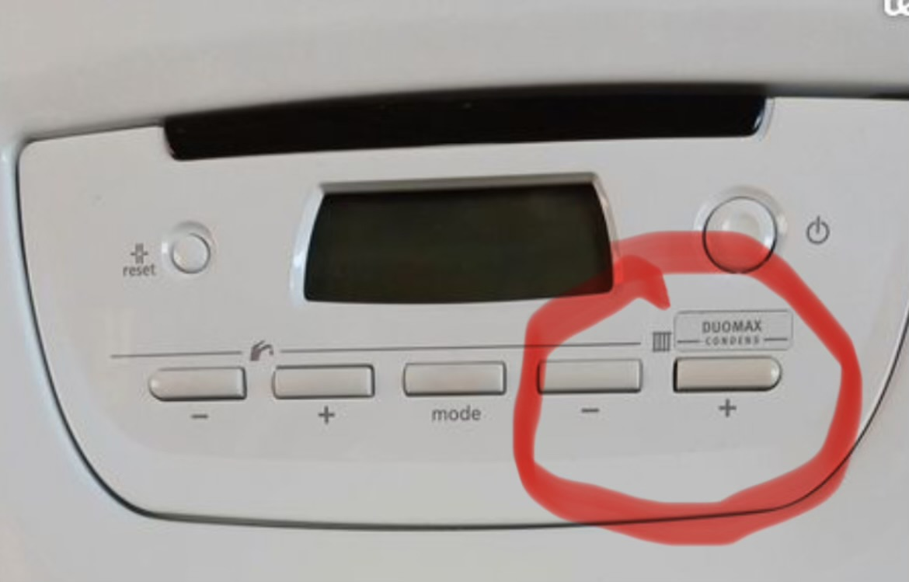

Heating and temperature adjustment
Each radiator can be turned up (Counterclockwise) or down (Clockwise) individually.
Extra Blankets
For your comfort, extra blankets are stored on the right hand side of the large closet in the living room.
Central heating
The central heating is located inside the closet between the living room and the kitchen.
View of the heating system
Temperature adjustment (circled buttons)
The two buttons on the right increase or decrease the radiator temperature (- or +)
Increase or decrease radiator temperature (by steps of 10°C), though wait a couple of hours for the propagation.
Mode button
This button will switch heating mode (radiators, water). Please use with caution and only if needed.